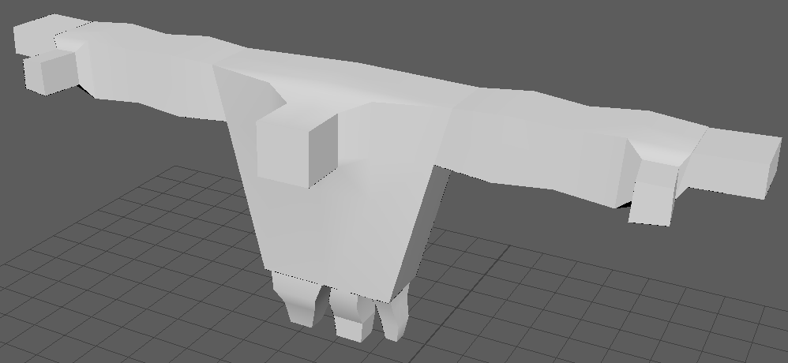
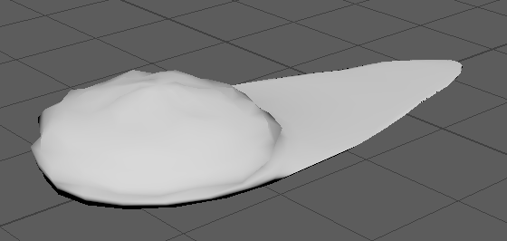
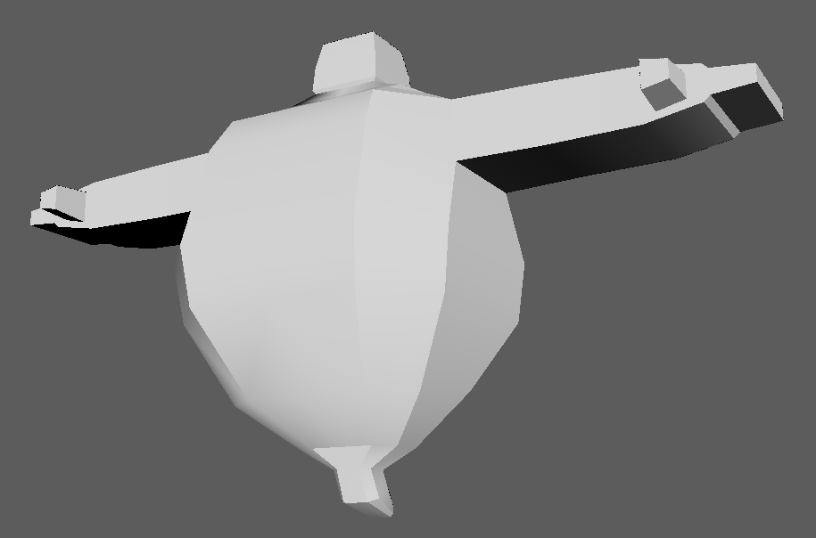

Made for the Fall 2025 FSU Game Jam over the course of four days, my team and I had so much fun making Ghoul Duel that we're continuing to work on it even after the Jam finished. I worked on about half of the enemy models and about half of the coding work, along with our team's other modelers and programmer. Making the models was a challenge, as we stuck to a low-poly aesthetic on top of a bitcrush visual filter to make it really emulate the look and feel of a PS1-era horror game. I had to find ways to keep the models blocky but still identifiable and easy to animate.